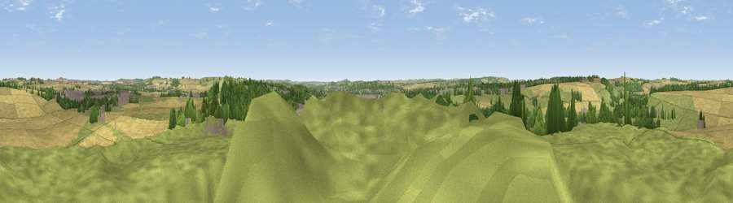

Viewpoint near Stratford-sub-Castle
#19700 in England · top 22% of its area beats it · near Stratford-sub-CastleWhere it is
The exact computed spot (SU 13775 32725). Click the marker for map links.
The view, rendered

A 360° render of this exact spot computed from the terrain model, tree cover and land cover — summer colours, afternoon light, calibrated against photographs of famous viewpoints. Real trees, hedges and buildings will differ in detail.
The panorama
Grey silhouette: terrain skyline in each direction (720 bearings, Earth curvature and refraction included). Dashed green: skyline with trees (+15 m) and buildings (+8 m) as obstacles. Blue strip: how far the ground is visible on each bearing.
Where the view opens
Wedge length = distance to the farthest visible ground on that bearing (vegetation-aware). Rings at 10, 25 and 50 km.
What fills the view
48% grassland · 33% cropland · 14% woodland · 6% built-up
Angular shares of the visible panorama (visual magnitude), not map area. Landscape diversity 0.50 (0–1 Shannon).
Key numbers
More beautiful places nearby
The staircase of upgrades: each row has a higher view potential than everything closer. Driving times are estimates from straight-line distance, calibrated against real road routing — check an actual route before setting out.
| Place | Direction | Drive | Score |
|---|---|---|---|
| Viewpoint near Laverstock | ESE · 3 km | ~8 min | 58.0 |
| Cockey Down | ESE · 4 km | ~9 min | 60.3 |
| Hydon Hill | WSW · 10 km | ~20 min | 61.2 |
| Viewpoint near West Grimstead | SE · 11 km | ~21 min | 62.7 |
| Viewpoint near Bulford | NNE · 12 km | ~22 min | 70.3 |
| Monk's Down | WSW · 23 km | ~39 min | 74.4 |
| Viewpoint near Berwick St John | WSW · 24 km | ~40 min | 78.2 |
| West High Down | SSE · 51 km | ~72 min | 79.8 |
51.09367, -1.80468 · source: screening · position refined by local search. Computed location — check access rights before visiting.